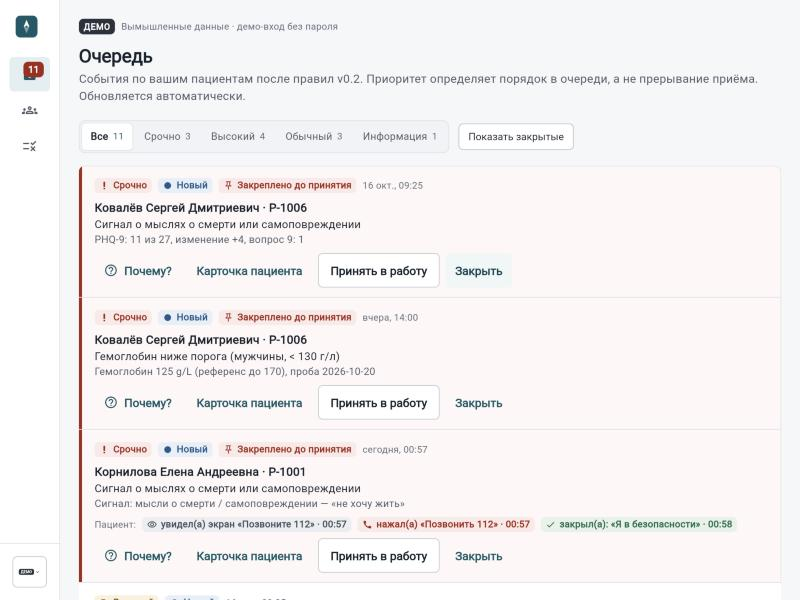
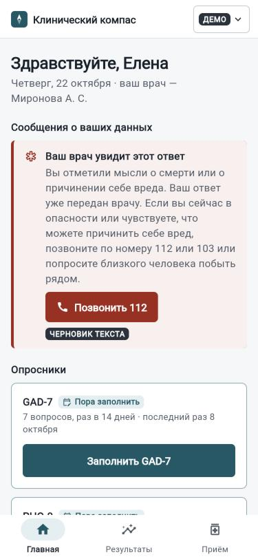
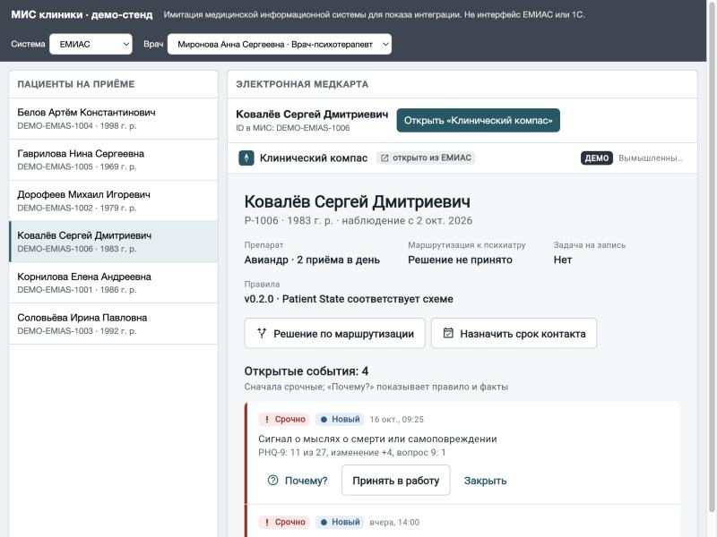
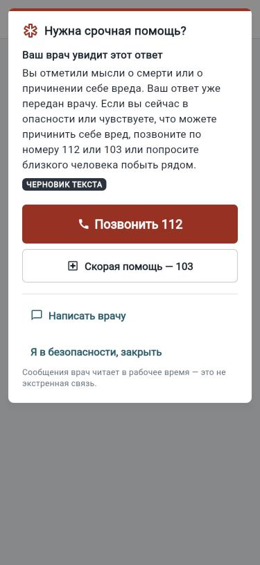
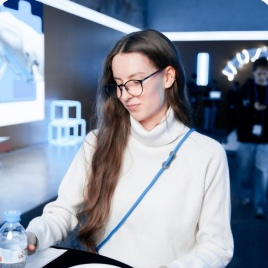

О пропуске таблеток, побочном эффекте или ухудшении врач узнаёт только на следующем приёме.
Для психиатров и психотерапевтов
AI‑ассистент врача между визитами
Пациент рассказывает о самочувствии в приложении — врач получает очередь сигналов, разобранных по срочности. Решение всегда остаётся за врачом.
- Находит сигналы риска
- 84%
- F1 извлечения фактов
- 0,70
- Клинических правил
- 16


Проблема
Между визитами врач не видит пациента
За это время многие бросают терапию. А то, что лечение не принимали, потом путают с тем, что оно не работает.
Психиатр и психотерапевт
Ведут пациентов с генерализованным тревожным расстройством на терапии АВИАНДР®. Им нужно видеть динамику, приверженность и переносимость — без звонка каждому.
Терапевт и невролог
К ним пациенты с тревогой приходят первыми. Им нужно понимать, когда направить к психиатру обязательно, а когда — желательно.
Как это устроено
ИИ разбирает текст. Срочность решают правила.
-
01
Пациент
Раз в две недели проходит GAD-7 и PHQ-9, утром и вечером отмечает приём препарата, пишет о самочувствии своими словами.
-
02
ИИ на GigaChat
Переводит свободный текст в факты: симптомы, сигналы риска, пропуски приёма, анализы. Больше он ничего не решает.
-
03
Правила
16 детерминированных правил по КР Минздрава и инструкции АВИАНДР® определяют приоритет события и что показать пациенту.
-
04
Врач
Видит очередь: срочное закреплено сверху. Кнопка «Почему?» показывает правило, источник и факты, на которых оно сработало.
ИИ не ставит диагноз и не назначает лечение. Он только структурирует текст — поэтому каждое решение системы можно объяснить и проверить.
Если ИИ недоступен, сообщение всё равно сохраняется, а опасные фразы проверяет резервный словарь. Сигнал риска не теряется.
Продукт
Одно приложение для пациента, врача и регистратуры
Рабочая очередь
События по своим пациентам, отсортированные по приоритету. Видно, что пациент уже сделал.
Пациенту — одна задача на экран
iOS, Android и веб из одного кода на Flutter.

Внутри ЕМИАС и 1С:Медицина
Врач открывает карточку прямо из медкарты по одноразовому коду. Сводка уходит обратно в МИС в формате HL7 FHIR R4.
Ещё в сервисе
- Чат с врачом в реальном времени, с отметкой «прочитано» и файлами
- Побочные эффекты по всем пациентам; эффекты вне листка-вкладыша выделены отдельно
- Обезличенная выгрузка в CSV для анализа — без ФИО и телефонов
- Журнал аудита: кто, что и когда сделал с каждым событием

Срочные случаи
Если пациенту плохо прямо сейчас
Когда в ответах или сообщении появляется сигнал о самоповреждении, пациент сразу видит экран с крупной кнопкой «Позвонить 112» и номером скорой 103.
Врачу событие приходит закреплённым вверху очереди, и там видно, что сделал пациент: открыл экран, позвонил или закрыл его.
Скорую сама система не вызывает: шкала и словарь — не диагноз, а ложный вызов без живого человека диспетчер не обработает. Звонит сам пациент.
Метрики
Проверили на 155 сообщениях пациентов
Сравнили две версии промпта на одном наборе: 155 сообщений, 172 размеченных факта. Главное — сколько сигналов риска модель находит: с 7 из 19 выросло до 16.
- Ответов по схеме
- 100%
- Сбоев
- 0
- Ответ, медиана
- 1,8 с
Это сравнение двух прогонов модели, а не клиническая валидация. Точность по препаратам снизилась — в основном из-за дублей; разбор лежит в репозитории.
Показать таблицей
| Метрика | v1.1 | v1.2 |
|---|
На чём сделано
- Backend и ML
- Python 3.12, FastAPI, Pydantic, PostgreSQL, SQLAlchemy, GigaChat
- Клиент
- Flutter / Dart — один код для веба, iOS и Android
- Интеграции
- REST API, HL7 FHIR R4, окно в ЕМИАС и 1С:Медицина, Centrifugo
- Инфраструктура
- Docker Compose, GitHub Actions, 181 автотест
Команда
Медицина, разработка и данные в одной команде
Мы из МГУ, СУ, ИТМО и УрФУ. Делали проекты для AIRI, УГМК и других.
-
Давлет Схаляхов
Медицинский консультант
5-й курс лечебного факультета Сеченовского университета, выпускник Школы 21 по ИИ в медицине
@Dvlt_skh -
Кирилл Варламов
Fullstack-разработчик
Ведущий Flutter-разработчик в Zig-Zag, победитель хакатона по ИИ от К2 НейроТех
@enouhg -
Борис Черкасов
AI / Backend
CEO QamCore AI — сервисы для ментального здоровья. Выпускник МГУ, учится в Сколтехе
@bor1s_cherkas0v -
Роман Зулкарнаев
Аналитик
Финалист хакатонов Газпрома, МИР и К2 НейроТех, финалист олимпиады DANO по анализу данных
@cetraaa1 -

Мария Нохова
Менеджер продукта
Стратегический менеджер в УГМК, топ-1 школы консалтинга SoC, проджект-менеджмент в МФТИ
@MariyaNokh
Посмотрите сами
Демо-стенд открыт: войдите врачом или пациентом без пароля. Все люди и данные там вымышлены.